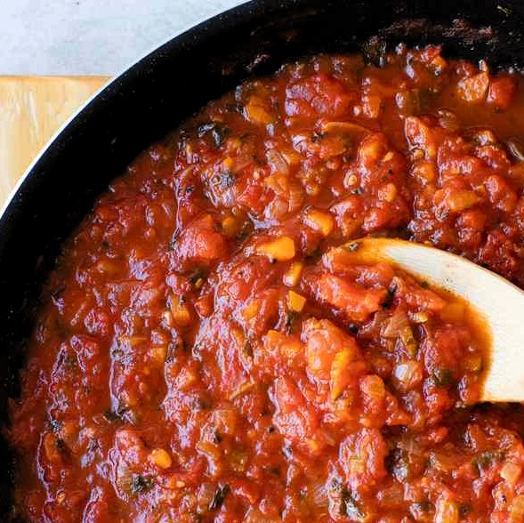

Tomatosauce

Lækker tomatsovs som sanne kan lide den.
Ingredienser
- 1 Dåse flået tomat
- 1 løg
- 2 Snackpeber
- 2 revede gulerødder
- 1 grøntsags buillon terning
- Krydderier, urter og den slags
Tilberedning
- Riv gulerødder, skær peber ud, snit løget
- Steg løget, vælt revet gulerod på, tilsæt peberfrugt
- Tilsæt tomatterne når det hele er stegt
kom godt med Krydderier på. Tilsæt lidt vand
og lad det stå længe. Kom også terningen i.